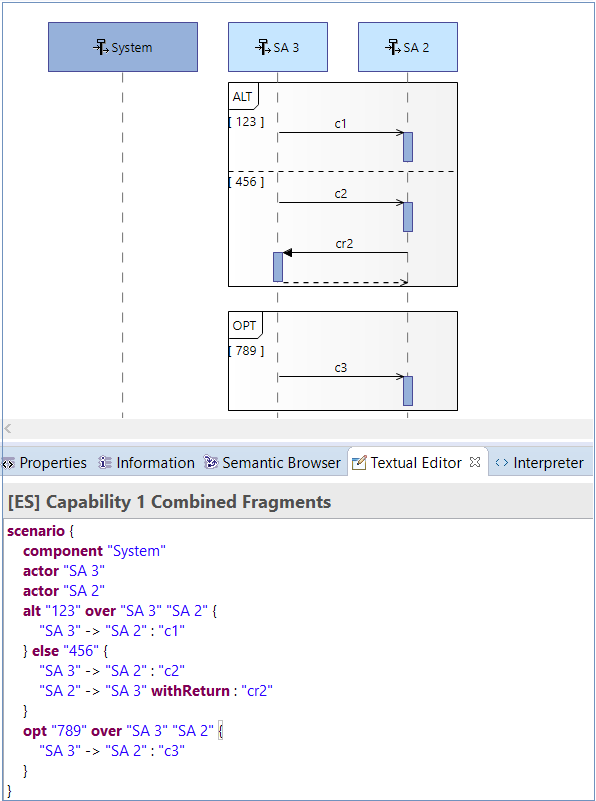

Functionalities
Once the Textual Scenario Add-On is installed, you will be able to edit scenarios in textual mode.
Textual Scenario View
When creating a new scenario diagram (OES, OAS, IS, FS, ES), the scenario editor is displayed as a separate view. The user shall be able to edit a scenario in the embedded Textual Scenario Editor. If the user has multiple Capella Scenario Diagrams opened, when switching tabs to another Scenario Diagram, the text editor will update with the content from the new diagram and the editor will be linked to the new diagram.
Consistency of the data
In order to maintain consistency between diagram and text, two buttons are available:
-
refresh button : on pressing the refresh button, the text editor is updated with the data from the diagram
-
save button : on pressing the save button, the diagram is updated with the content described by the textual scenario associated to the current diagram
Syntax for the Textual Scenario Editor
The syntax supported in the textual editor for IS, FS, ES Capella Scenarios is presented in the following paragraphs.
Participants
Depending on the type of scenario (OES, OAS, IS, FS, ES) and the architecture level on which our diagram is located, we can insert instance roles specifying a keyword (actor, component, function etc) and the name of the instance role (currently the parts associated need to already exist).
Keywords
-
actor : it will create an instance role representing an actor; this keyword is available for IS, ES diagrams at Operational, System, Logical and Physical Level.
-
component : it will create an instance role representing a component; this keyword is available for IS, ES diagrams at System, Logical and Physical Level.
-
configuration_item : it will create an instance role representing a configuration item; this keyword is available for IS diagrams at EPBS Level.
-
entity : it will create an instance role representing an entity; this keyword is available for OES diagrams at Operational Level.
-
role : it will create an instance role representing a role; this keyword is available for OES diagrams at Operational Level.
-
function : it will create an instance role representing a function; this keyword is available for FS diagrams.
-
activity : it will create an instance role representing an activity; this keyword is available for OAS diagrams.
Examples
Messages
The user can insert messages between participants assuming the fact that the exchange already exists between the selected source and target participant.
-
sequence messages : it will add a sequence messages between the source and the target instance roles which shall already exist, otherwise a validation error is displayed.
-
source_ir" -> "target_ir" : "msg"
- example:
- "A 1" -> "A 2" : "exec"
-
activate execution : in Capella, we always activate an execution after each sequence message
' -> '; each sequence message implies an activation
-
deactivate execution : the
' deactivate ' keyword is used to deactivate a message; if we have a simple sequence message which ends immediately, the deactivation keyword is not required; if we have a sequence messages that ends later, we shall add the
' withExecution ' keyword and it is mandatory to deactivate the message when needed.
- example:
- "A 1" -> "A 2"
withExecution : "exec"
- "A 2" -> "A 3"
-
deactivate "A 2"
-
return branch : to mark that a message has a return, the
withReturn keyword can be used; if the message does not return immediately and other events occur on its execution, then the
withExecution keyword can be used in the same time with the
withReturn keyword to mark that the current message is a complex message and has a return.
-
create messages : it will add a create message between the source and the target instance roles which shall already exist, otherwise a validation error is displayed.
-
"source_ir" ->+ "target_ir" : "msg"
- example:
- "A 1" ->+ "A 2" : "msg"
-
delete messages : it will add a delete messages between the source and the target instance roles which shall already exist, otherwise a validation error is displayed.
-
"source_ir" ->x "target_ir" : "msg"
- example:
- "A 1" ->x "A 2" : "msg"
-
arm timer : it will add an arm timer on the given timeline.
-
->> "timeline" : "msg"
- example:
- ->> "A 1" : "arm_timer"
Examples


Combined Fragments
The user can define a combined fragment from the text using the syntax below:
- for
ALT:
-
-
alt “condition A”
over timeline1, timeline2,… {
- [something]
- }
else “condition B” {
- [something_else]
- }
else “condition C” {
- [something_else]
- }
- for the other combined fragments:
PAR, LOOP, ASSERT, CONSIDER, CRITICAL, IGNORE, NEG, OPT, SEQ, STRICT, UNSET':
-
-
par “condition A”
over timeline1, timeline2,… {
- [something]
- } “condition B” {
- [something_else]
- } “condition C” {
- [something_else]
- }
Examples

State. Modes. Allocated Functions
The following syntax can be used in order to define state, modes and allocated functions in the textual mode:
- state
-
on “Timeline”
state “State_name”
- mode
-
on “Timeline”
mode “Mode_name”
- allocated functions
-
on “Timeline”
function “Function_name”
Examples